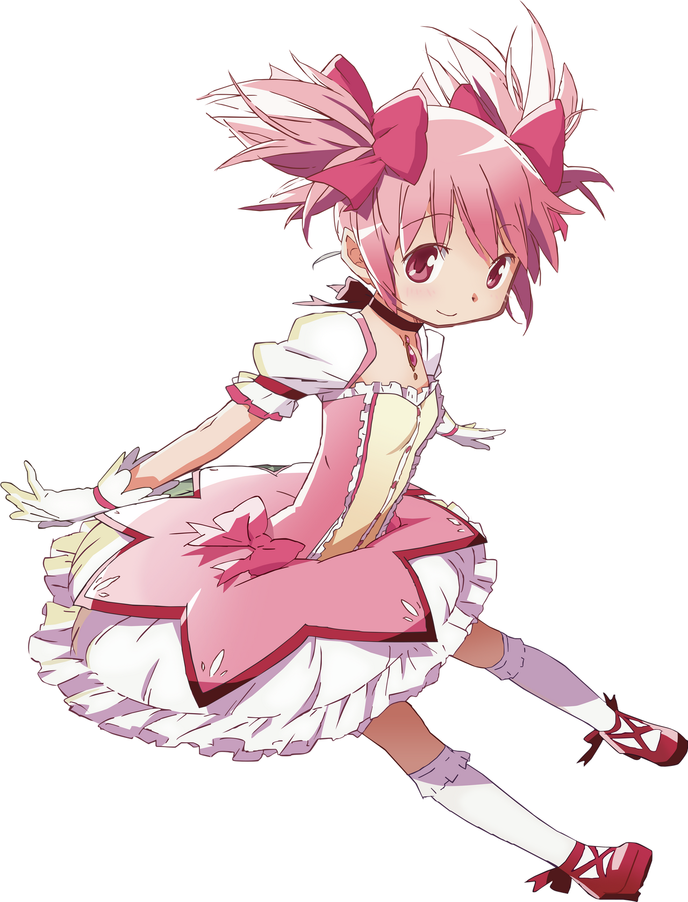

Padaria artesanal de Mitakihara
Faça um contrato com o pão quentinho
Aqui ninguém precisa virar garota mágica pra ter um desejo realizado. Experimente o Croissant Rosa da Madoka, o Pão de Queijo da Charlotte e a Torta Tiro Finale da Mami, sempre com um chá bem quentinho.


Desde
2011